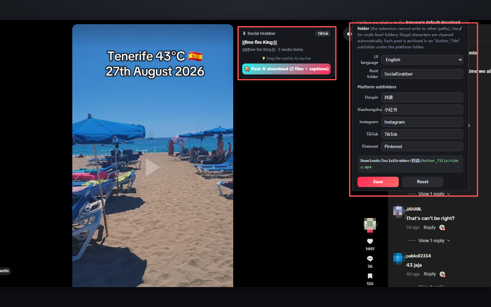
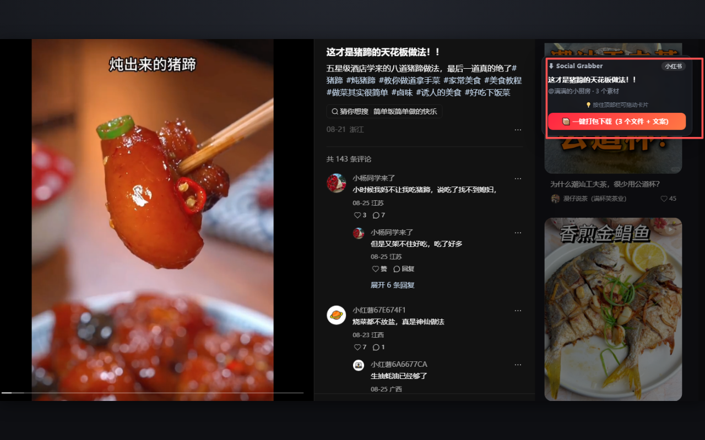
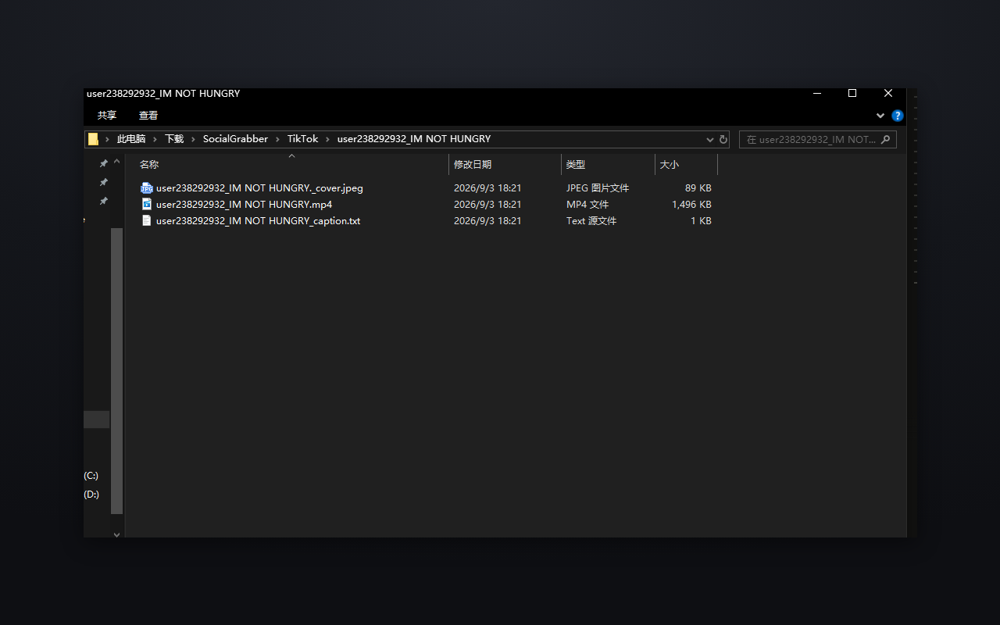
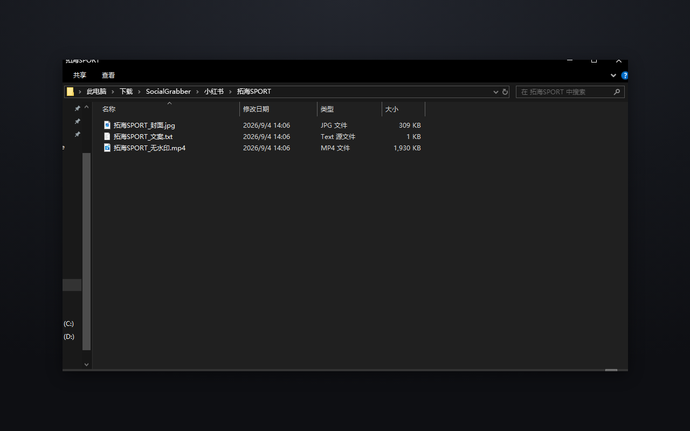

Download videos, images and captions from Xiaohongshu, Douyin, TikTok, Instagram and Pinterest
Social Grabber is a free browser extension. A small card appears on the page you are viewing — click once and every detected media file, plus a caption .txt, is saved into neatly organized folders. No account, no separate downloader website, nothing uploaded: everything happens locally in your browser.
Free · No account · No ads or analytics · Runs 100% locally

Works with five platforms
Open any of these in your browser and the card appears on the page.
Xiaohongshu / RedNote
Full-quality images, videos, covers and captions.
Douyin (抖音)
Watermark-free videos, image sets, covers and captions.
TikTok
Videos, images, covers and captions.
Post images and videos.
Images and videos.
Everything in one card
No link copying, no third-party websites, no watermarks added.
One-click pack
Pack & download saves every detected media file on the page, plus a caption .txt.
Tick only what you need
When a page has several posts detected, select the ones you want and pack only those.
Auto-organized folders
Files are sorted into SocialGrabber/<platform>/<author>_<title>/ — no manual renaming.
Caption saved as .txt
Title, text, author, source URL and the media list, saved right next to the media.
Custom download folders
Change the root folder and each platform's subfolder from the extension popup.
100% local
No server, no ads, no analytics. Parsing and downloading happen inside your browser.
How it works
From browsing to saved files in three steps.
- 1
Open a supported page
Browse Douyin, Xiaohongshu, TikTok, Instagram or Pinterest as usual.
- 2
The card shows what is detected
A small card appears on the page (bottom-left by default — drag it anywhere) with the number of detected items.
- 3
Click Pack & download
Media files and the caption .txt are saved into your Downloads folder, organized by platform, author and title.
In action



Frequently asked questions
How do I download a Xiaohongshu (RedNote) video?
Open the note in your browser. The Social Grabber card appears on the page — click “Pack & download” and the video, images and note text are saved to your Downloads folder, inside a folder named after the author and the title. No link copying, no separate downloader website.
Does it work on Douyin and TikTok?
Yes. Douyin, Xiaohongshu, TikTok, Instagram and Pinterest are all supported. The card detects videos, images and covers where the platform provides them, along with the caption text.
Can I save image posts and photo sets, not just videos?
Yes — image sets on Douyin and Xiaohongshu, image posts on TikTok and Instagram, and images on Pinterest are detected alongside videos, and you can tick exactly which ones to save.
Where do my files go?
By default into Downloads/SocialGrabber/<platform>/<author>_<title>/. You can change the root folder and each platform's subfolder in the extension popup.
Is it free? Do I need an account?
It is free, with no account and no sign-up. You browse the platforms as usual (log in to them if you normally would) — Social Grabber never asks for platform credentials.
Does Social Grabber collect my data?
No. There is no server, no ads and no analytics; everything is processed inside your browser and nothing is uploaded. See the privacy policy for the details.
中文说明
Social Grabber 是一个浏览器扩展：浏览抖音、小红书、TikTok、Instagram、Pinterest 时，页面左下角会出现一个抓取卡片（可拖动），点一下就把当前作品的视频、图片和文案保存到你的下载目录，自动按「平台 / 作者_标题」归档。
一键打包
视频、图片、封面与文案 TXT 一次保存，自动归档到对应文件夹。
勾选保存
一页捕获到多条作品时，只打包你勾选的那些。
文案 TXT
标题、正文、作者、源地址与媒体清单一并带走。
目录自定义
根目录与每个平台的子目录都能改（默认「下载/SocialGrabber/」）。
双语界面
中文 / English 自动跟随网页语言，也可手动切换。
纯本地运行
没有服务器、没有广告、没有统计，解析与下载都在浏览器里完成。
小红书视频怎么下载？
打开笔记页面，点卡片上的「一键打包下载」，视频、图片与笔记文案会保存到「下载/SocialGrabber/小红书/作者_标题/」。不用复制链接、不用打开任何第三方网站。
抖音视频下载需要登录吗？
扩展本身不需要你登录任何账号，也不会索取平台密码；如果你平时浏览该内容本来就要登录，照常使用即可——扩展只识别页面已经加载出来的内容。
数据会被上传吗？
不会。没有服务器、没有广告与统计分析，所有解析和下载都在你的浏览器本地完成；你点击保存的文件直接存进本机下载目录。详见隐私政策。
免费 · 无需注册 · 无广告与统计 · 完全本地运行